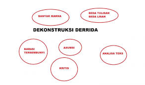
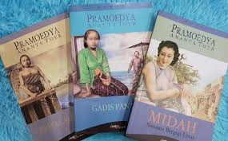
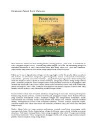
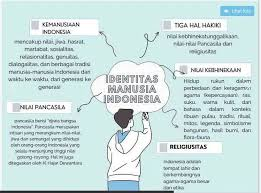

Tugas
Ruang interaktif bagi mahasiswa, dosen, dan civitas akademika untuk berbagi ide, berdiskusi, serta bertukar informasi mengenai berbagai topik akademik dan kebijakan kampus.
Analisis Sastra Postmodern: Tema dan Teknik Naratif
Tambahkan Tugas Baru
Rencana
Fadhil - 10 Maret
Rina - 12 Maret
Sedang Berjalan
Dian - 8 Maret
Budi - 9 Maret
Selesai
Siti - 5 Maret
Andi - 6 Maret
Kendala
Wahyu - 7 Maret
Carmen - 8 Maret
Analisis Sastra Postmodern: Tema dan Teknik Naratif
Tambahkan Tugas Baru
Rencana
Fadhil - 15 Maret
Rina - 18 Maret
Sedang Berlangsung
Dian - 20 Maret
Budi - 22 Maret
Hasil
Siti - 25 Maret
Andi - 28 Maret
Kendala
Wahyu - 30 Maret
Carmen - 2 April
Analisis Sastra Postmodern: Tema dan Teknik Naratif
Tambahkan Tugas Baru
Rencana
Fadhil - 15 Maret
Rina - 18 Maret
Sedang Berlangsung
Dian - 20 Maret
Budi - 22 Maret
Hasil
Siti - 25 Maret
Andi - 28 Maret
Kendala
Wahyu - 30 Maret
Maya - 2 April

Ayunda
Humas MWAUNP
The more that you read, the more things you will know, the more that you learn, the more places you’ll go – Dr. Seuss
Ayunda
Humas MWAUNP
The more that you read, the more things you will know, the more that you learn, the more places you’ll go – Dr. Seuss
Ayunda
Humas MWAUNP
The more that you read, the more things you will know, the more that you learn, the more places you’ll go – Dr. Seuss
Ayunda
Humas MWAUNP
The more that you read, the more things you will know, the more that you learn, the more places you’ll go – Dr. Seuss
Ayunda
Humas MWAUNP
The more that you read, the more things you will know, the more that you learn, the more places you’ll go – Dr. Seuss
Pertanyaan yang Sering Diajukan
Apa itu MWAUNPHub?
MWAUNPHub adalah platform digital yang dirancang untuk mendukung komunikasi, diskusi, dan kolaborasi akademik antara Mahasiswa, Dosen, dan Civitas Akademika Universitas Negeri Padang (UNP). Platform ini menjadi pusat informasi, forum diskusi, manajemen tugas, serta sarana pengaduan dan feedback terkait kebijakan kampus.
Siapa saja yang dapat menggunakan MWAUNPHub?
MWAUNPHub dapat digunakan oleh mahasiswa, dosen, staf akademik, serta anggota Majelis Wali Amanat (MWA) UNP. Setiap pengguna dapat mengakses fitur sesuai dengan perannya, seperti mengikuti forum diskusi, memberikan masukan, atau mengelola tugas akademik.
Bagaimana cara bergabung dan menggunakan platform ini?
Pengguna dapat mengakses MWAUNPHub melalui mwaunp-hub.vercel.app dan melakukan login menggunakan akun mahasiswa atau staf UNP. Setelah masuk, pengguna dapat menjelajahi fitur yang tersedia, seperti membaca pengumuman, bergabung dalam forum, atau mengajukan pengaduan.
Apakah forum diskusi di MWAUNPHub bersifat terbuka untuk semua mahasiswa?
Ya, forum diskusi dapat diakses oleh semua mahasiswa, tetapi beberapa kategori diskusi mungkin memiliki pembatasan berdasarkan peran atau topik tertentu. Misalnya, diskusi tentang kebijakan akademik mungkin hanya dapat diikuti oleh mahasiswa tingkat tertentu atau dosen.
Bagaimana cara mengajukan pengaduan atau saran melalui MWAUNPHub?
Pengguna dapat mengakses menu "Pengaduan", mengisi formulir pengaduan, dan memilih kategori yang sesuai (misalnya: fasilitas kampus, administrasi, layanan akademik). Setelah dikirim, pengguna dapat memantau status pengaduan dan menerima notifikasi jika ada pembaruan dari pihak kampus.